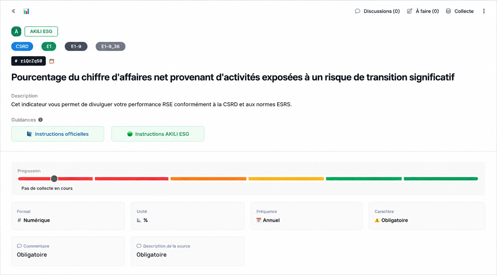
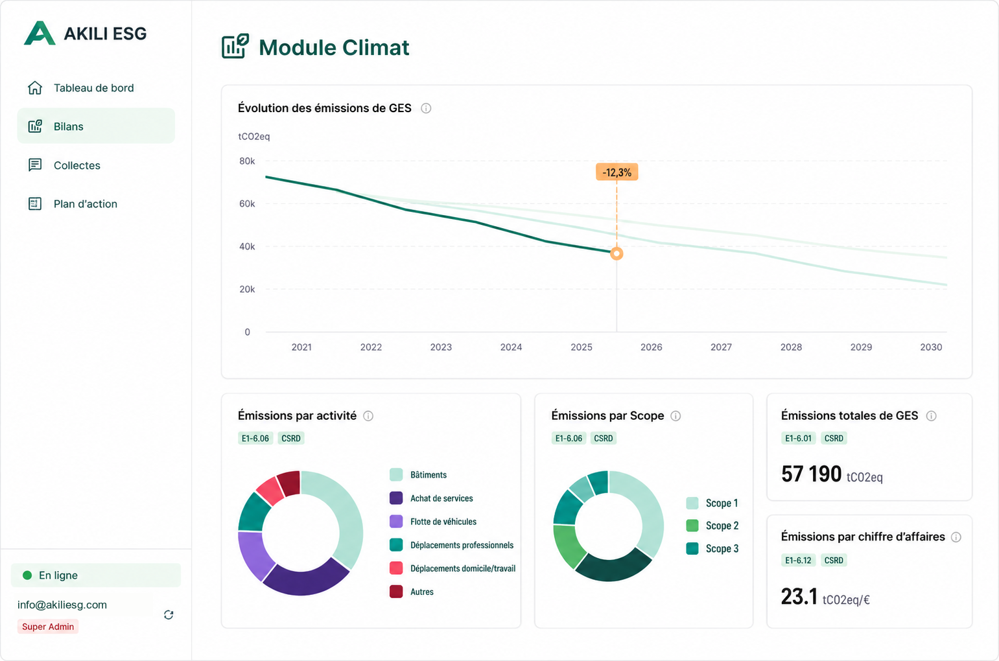

Conseil en reporting de durabilité · Abidjan
En Afrique de l'Ouest, la durabilité devient un critère de sélection — pour vos financeurs, vos clients, vos partenaires. Nous transformons votre démarche ESG en un récit structuré, mesurable et défendable.
Abidjan · Côte d'Ivoire · Zone OHADA

Notre indice propriétaire
Un indicateur exclusif, issu de la recherche, qui mesure l'alignement entre vos engagements déclarés, vos données chiffrées et vos actions vérifiables.
Référentiels maîtrisés
AKILI ESG — Module Climat
Suivez vos émissions, comparez vos trajectoires et transformez vos données carbone en décisions lisibles pour vos équipes, vos financeurs et vos auditeurs.

AKILI ESG — Plateforme
La plateforme AKILI ESG couvre l'ensemble du cycle de reporting — du diagnostic initial à la publication du rapport final.
Les enjeux
Un rapport ESG mal construit, c'est un dossier de financement affaibli. Un appel d'offres perdu face à un concurrent mieux préparé. Une filiale européenne qui remet en question votre chaîne de valeur. La rigueur sur le fond et la clarté sur la forme ne sont pas des options — elles sont la condition de votre crédibilité.
Accès au financement vert
Les DFI, fonds d'impact et banques commerciales actifs en zone UEMOA conditionnent de plus en plus leurs décisions à la qualité de votre reporting extra-financier.
BRVM · DFI · Fonds impactContrats avec vos donneurs d'ordre européens
Soumis à la CSRD, vos clients et partenaires européens collectent des données ESG auprès de toute leur chaîne de valeur — y compris leurs sous-traitants ivoiriens.
CSRD · Chaîne de valeurCrédibilité auprès des investisseurs
Un rapport sans preuves vérifiables ni indicateurs solides ne résiste pas à l'analyse d'un investisseur institutionnel. L'indice RADF mesure exactement cet écart.
Investisseurs · RADFConformité réglementaire OHADA
La Note 35 OHADA impose des obligations de publication aux entreprises d'une certaine taille. Le non-respect expose à des risques juridiques et à une perte de confiance des parties prenantes.
Note 35 · OHADANotre approche
La rigueur réglementaire sans la lisibilité ne convainc personne. La communication sans les preuves ne résiste à aucun audit. AKILI ESG réunit les deux — pour les entreprises qui opèrent entre Abidjan et les marchés internationaux.
Notre approche associe rigueur réglementaire, narration stratégique et mesure de la cohérence via l'indice RADF — pour évaluer précisément l'écart entre ce que votre entreprise déclare et ce qu'elle démontre réellement.
Ce qui nous distingue
L'indice RADF, exclusif
Le seul cabinet en Afrique de l'Ouest à proposer une mesure propriétaire de la cohérence discours-pratiques, chapitre par chapitre.
Ancrage OHADA + CSRD
Nous maîtrisons les deux référentiels : la Note 35 OHADA pour les entreprises locales, la CSRD/ESRS pour les filiales de groupes européens.
PME et ETI, pas les seuls grands groupes
Nous avons conçu des offres adaptées aux ressources et contraintes des entreprises de moins de 500 salariés.
Production complète, bout en bout
Du diagnostic à la publication — rédaction, design éditorial, mise en page — sans sous-traiter la vision stratégique.
Nos services
Cinq modules indépendants, activables selon votre avancement et vos ressources. De l'audit initial à la publication finale, en passant par notre diagnostic exclusif RADF. Chaque brique peut être commandée séparément ou intégrée dans une mission complète.
Cartographie complète de vos enjeux ESG selon les ESRS et la Note 35 OHADA. Identification des sujets matériels. Scoring RADF initial.
Livrables
Rapport de diagnostic 15 pages · Matrice de double matérialité · Fiche de score RADF initiale · Benchmark pairs sectoriels
Structuration du plan éditorial, interviews internes, collecte et nettoyage des données brutes. Adaptation au référentiel retenu.
Livrables
Chemin de fer détaillé · Plan de collecte · Compte-rendu d'interviews · Base de données KPI structurée
Rédaction complète du rapport avec application de notre indice RADF à chaque section. Score par chapitre et score global. Recommandations avant publication.
Livrables
Rapport rédigé intégralement · Fiche de score RADF annotée · Note de recommandations rédactionnelles
Mise en page professionnelle adaptée à votre charte graphique. Infographies de données. Option bilingue FR/EN.
Livrables
PDF HD impression · PDF web interactif · Infographies isolées · Version bilingue (option)
Suivi trimestriel des évolutions CSRD, ESRS, EcoVadis et Note 35 OHADA. Newsletter mensuelle et analyses sectorielles ciblées zone UEMOA.
Livrables
Newsletter mensuelle · Note de veille trimestrielle · Analyses sectorielles · Alertes réglementaires
Programmes sur mesure pour vos équipes dirigeantes, RSE, finance et RH. Maîtrise des référentiels, collecte de données, pilotage de projet reporting et préparation aux évaluations EcoVadis.
Livrables
Programme de formation personnalisé · Supports pédagogiques · Atelier pratique sur vos données · Certificat de participation
Indice propriétaire
Développé à partir d'une recherche doctorale en sciences de gestion, le RADF mesure la distance entre les engagements formulés et les preuves apportées — chapitre par chapitre. Ses résultats anticipent les points de vigilance que vos auditeurs et vos parties prenantes identifieront.
Rhétorique
Analyse du registre lexical — assertions fortes vs modulations et réserves.
Adéquation
Vérification de la cohérence entre les thèmes abordés et les enjeux matériels identifiés.
Données
Densité et fiabilité des indicateurs chiffrés par rapport aux affirmations qualitatives.
Faits
Présence de preuves concrètes, datées et vérifiables pour chaque engagement déclaré.
Tarification
PME
Starter
8 – 15 M FCFA
Modules 1 + 3 + 4
Diagnostic · Rédaction RADF · Mise en page
Idéal pour une première publication VSME ou Note 35 OHADA.
ETI recommandé
Essential
20 – 40 M FCFA
Modules 1 + 2 + 3 + 4
Diagnostic · Collecte · Rédaction RADF · Design
Pour une ETI publiée pour la première ou deuxième fois.
ETI filiale
Premium
50 – 80 M FCFA
Modules 1 à 6
Mission complète + formation équipes + veille
Pour les filiales de groupes soumis à la CSRD européenne.
Évaluation
EcoVadis
5 – 12 M FCFA
Diagnostic EcoVadis · Plan d'amélioration · Accompagnement au questionnaire · Formation équipes
Pour les entreprises sollicitées par leurs clients pour une notation EcoVadis.
Récurrent
Veille
2 – 4 M FCFA / an
Module 5 seul
Newsletter · Alertes réglementaires · Mises à jour OHADA & CSRD
Abonnement annuel activable indépendamment.
Notre histoire
Pourquoi AKILI ESG est né ?
En 2022, alors qu’il terminait sa recherche doctorale à l’Université Paris 8, Karamoko Diaby a analysé 2 926 rapports de durabilité des six plus grandes banques françaises sur dix ans. L’objectif : mesurer l’écart entre les engagements déclarés et les preuves effectivement fournies.
Le résultat a été sans appel : derrière des discours parfois très engagés, les preuves manquaient. Des indicateurs absents, des données floues, des actions non datées. Il a formalisé cet écart dans un indice, aujourd’hui appelé RADF.
Mais à quoi sert un outil de mesure sans accompagnement sur le terrain ? À la même époque, des dirigeants ivoiriens contactaient ce chercheur : leurs clients européens exigeaient des rapports ESG, leurs banquiers réclamaient des indicateurs de durabilité, et ils ne savaient pas par où commencer.
AKILI ESG est né de cette rencontre. Entre une exigence académique de rigueur et une demande concrète d’entreprises ouest-africaines. Nous ne sommes ni un cabinet de communication standard, ni un simple bureau d’études. Nous sommes l’allié qui transforme la contrainte réglementaire en récit de crédibilité.
Notre équipe
Fondateur & Directeur
Analyste ESG et spécialiste de la communication non financière, Karamoko Diaby accompagne les entreprises dans la structuration et la valorisation de leur démarche de durabilité. Fort d'une expérience opérationnelle en analyse ESG — évaluation de portefeuilles, notation extra-financière et audit de reporting —, il a développé une expertise pointue à l'intersection de la finance durable et de la communication institutionnelle.
Chercheur en sciences de gestion à l'Université Paris 8, il est l'auteur de l'indice RADF, construit sur un corpus de 2 926 documents produits par les six principaux groupes bancaires français sur dix ans. Cet indice mesure l'écart entre les engagements ESG déclarés et les preuves effectivement apportées — un outil de rigueur autant que de crédibilité.
Titulaire de deux masters — Finance & Gestion des Actifs (Paris Nanterre) et Management (CNAM) —, il intervient en Afrique de l'Ouest auprès des ETI et PME de la zone OHADA, avec une maîtrise des référentiels CSRD, ESRS, VSME et Note 35 OHADA.
Notre façon de travailler
Témoignages
AKILI ESG nous a permis de structurer notre premier rapport VSME en moins de trois mois. Le score RADF nous a donné une vision claire de ce que nos partenaires financiers allaient retenir — et des points à corriger avant publication.
La rigueur méthodologique de Karamoko est rare sur le marché ivoirien. Nous avons utilisé le rapport produit directement dans notre dossier de levée de fonds auprès d'un investisseur institutionnel européen. Résultat : zéro question sur le volet ESG.
La veille réglementaire mensuelle nous fait économiser des heures de travail. Elle est devenue notre référence interne sur la CSRD et la Note 35 OHADA — bien plus fiable que ce que nous trouvions ailleurs sur le marché.
Notre écosystème
Juristes et consultants spécialisés CSRD, droit OHADA et réglementation financière BRVM. Mobilisés pour la validation juridique des publications.
Directeurs artistiques spécialisés en communication réglementée et rapports annuels. Mise en page exigeante, adaptée à votre charte.
Profils dédiés par secteur : agro-industrie, énergie, finance, BTP, FMCG. Pertinence sectorielle garantie de vos KPI et narratifs.
Traitement de vos données brutes (carbone, social, eau, déchets) pour produire des indicateurs auditables et comparables.
Liens avec des cabinets d'audit et d'expertise comptable présents en Côte d'Ivoire pour préparer vos équipes à la vérification tierce.
Montée en compétence de vos équipes sur les référentiels ESG, la collecte de données et la gestion de projet reporting.
Nous écrire
Que vous débutiez votre première publication ou que vous souhaitiez structurer votre démarche CSRD, nous vous proposons un premier échange de 30 minutes sans engagement.
Réservation directe · 30 min · Sans engagement
FAQ réglementaire
CSRD · Filiales · Afrique
Q1 : Ma filiale ivoirienne est à 100 % détenue par un groupe français. Le groupe n’a encore rien demandé. Dois-je agir ?
Oui, anticipez. Contactez votre direction RSE groupe. Proposez une feuille de route. Les groupes proactifs valorisent les filiales qui prennent les devants.
Q2 : Quels sont les risques si ma filiale ne transmet pas les données ?
La maison mère peut être sanctionnée (amende jusqu’à 10 M€). En retour, elle peut exclure la filiale des appels d’offres internes, ou même décider de la céder.
Q3 : Faut-il un logiciel coûteux pour collecter les données ESRS ?
Non. Au début, un simple Excel structuré permet de couvrir 80 % des indicateurs de niveau 1 (effectifs, consommations, accidents). Des outils comme EcoVadis ou VSME peuvent être demandés par les donneurs d’ordre.
Q4 : Notre filiale n’a pas de service RH formel. Comment suivre l’écart de rémunération homme-femme ?
Commencez par un état des lieux simple : relevez les salaires de base sur une période donnée, anonymisez les données, calculez la moyenne par genre. C’est acceptable pour un premier reporting.
Q5 : Le Scope 3 (émissions indirectes) nous fait peur. Est-ce vraiment obligatoire ?
Pour une filiale, une partie du Scope 3 est demandée (achats de petit équipement, déplacements pros, fret). Vous pouvez utiliser des facteurs d’émission moyens (ex. : base Carbone de l’ADEME). L’exhaustivité parfaite n’est pas exigée en année 1.
Q6 : Que faire en cas de joint-venture (50/50 avec un partenaire local) ?
Si le groupe européen a le contrôle exclusif (selon IFRS 10), la filiale est concernée. En cas de contrôle conjoint, les règles sont floues – consultez le groupe et un avocat.
Q7 : Le RGPD s’applique-t-il quand on transmet des données sur les salaires ?
Oui, si la filiale traite des données de citoyens européens (cas rare en Afrique). Par sécurité, anonymisez toujours les données personnelles avant envoi à la maison mère.
Q8 : En résumé, comment savoir si je suis concerné ?
Tableau récapitulatif :
– Filiale à 100 % d’un groupe européen, CA groupe > 150 M€ → Oui (obligation de fournir les données au groupe)
– Filiale à 100 %, CA groupe < 150 M€ → Non directement, mais indirectement via contrats
– Fournisseur local indépendant (sans lien de capital) → Non (sauf clause contractuelle)
– PME locale sans lien avec l’UE → Non
Q9 : Quand faut-il commencer ?
Dès maintenant. Pour les données de l’exercice 2025, le reporting est prévu en 2026. Vous avez donc moins d’un an pour collecter les données rétrospectives.
Q10 : Où trouver de l’aide technique ?
Consultez les guides de l’EFRAG (European Financial Reporting Advisory Group), les chambres de commerce franco-africaines, ou des consultants locaux spécialisés comme AKILI ESG.
OHADA · Obligation
La Note 35 de l'OHADA impose aux entreprises d'une certaine taille établies dans les États membres de produire des informations extra-financières dans leurs états financiers annuels. En pratique, les sociétés dont le chiffre d'affaires dépasse un seuil fixé par les autorités nationales, ou celles cotées sur la BRVM, sont directement concernées. Mais au-delà de l'obligation stricte, un nombre croissant de donneurs d'ordre, de banques commerciales et de fonds d'investissement actifs en zone UEMOA conditionnent leur engagement à la production d'un rapport extra-financier structuré — rendant la démarche stratégique même pour les entreprises qui ne seraient pas formellement obligées.
CSRD · VSME · Europe
La CSRD (Corporate Sustainability Reporting Directive) est la directive européenne qui s'applique aux grandes entreprises et aux sociétés cotées dans l'UE — ainsi qu'à leurs filiales hors UE dont le chiffre d'affaires consolidé dépasse 150 M€. Elle impose des rapports détaillés selon les normes ESRS. Le VSME (Voluntary Standard for Small and Medium Enterprises) est une norme simplifiée, d'application volontaire, conçue pour les PME qui ne sont pas directement soumises à la CSRD mais qui sont sollicitées par leurs clients ou partenaires financiers européens pour produire des données ESG.
Double matérialité · ESRS
La double matérialité est au cœur des ESRS : elle consiste à identifier à la fois les enjeux environnementaux et sociaux qui impactent votre entreprise (matérialité financière) et les impacts que votre activité produit sur l'environnement et la société (matérialité d'impact). Si vous êtes soumis à la CSRD ou si vous cherchez à aligner votre rapport sur les ESRS, cette analyse est obligatoire. Pour un rapport aligné sur la Note 35 OHADA ou le VSME, elle reste fortement recommandée : elle structure votre démarche, renforce la crédibilité de votre publication et permet d'anticiper les attentes de vos parties prenantes. C'est l'une des premières étapes de notre Module 01.
RADF · Méthodologie
Le RADF (Rhétorique, Adéquation, Données, Faits) est un indice propriétaire développé à partir d'une recherche doctorale en sciences de gestion portant sur les grandes banques françaises. Il mesure, chapitre par chapitre d'un rapport de durabilité, l'écart entre les engagements déclarés et les preuves effectivement fournies. Le calcul repose sur quatre axes : l'analyse du registre lexical (proportion d'affirmations fortes vs modalisées), la cohérence entre les thèmes traités et les enjeux matériels identifiés, la densité des indicateurs chiffrés par rapport aux énoncés qualitatifs, et la présence de preuves concrètes et datées. Chaque rapport reçoit un score par chapitre et un score global, accompagné de recommandations précises. C'est à la fois un outil de contrôle qualité avant publication et un argument de crédibilité auprès de vos parties prenantes.
Délais · Production
Pour une première publication, nous planifions en général 8 semaines à partir du lancement effectif de la mission. La phase de diagnostic et de collecte de données (Modules 01 et 02) représente 3 à 4 semaines, selon la disponibilité des interlocuteurs internes et la qualité des données existantes. La rédaction, la validation RADF et la mise en page représentent les 4 à 5 semaines suivantes. Pour les entreprises qui renouvellent une publication annuelle, le délai peut être réduit à 5 à 6 semaines grâce à la réutilisation du cadre méthodologique et de la base de données KPI construite lors de la première mission.
Données · Préparation
La plupart de nos clients démarrent avec des données partielles, dispersées ou non structurées — et c'est tout à fait normal. Notre Module 02 est précisément conçu pour auditer vos données existantes, identifier les lacunes et mettre en place un protocole de collecte adapté à vos moyens. Nous travaillons souvent à partir de fichiers Excel, de rapports internes, de données RH ou financières déjà disponibles. Ce qui compte au départ, c'est la volonté de construire une démarche solide — pas la perfection des données initiales. Nous vous guidons pas à pas pour atteindre un niveau de qualité publiable et auditable.
Ressources & Décryptages
Obligations, seuils d'application, indicateurs attendus — tout ce qu'il faut savoir pour se mettre en conformité sans se perdre dans les textes.
Lire l'article →De plus en plus d'entreprises ivoiriennes reçoivent une invitation EcoVadis de leurs clients européens. Voici comment aborder le questionnaire avec méthode.
Lire l'article →La directive européenne s'étend au-delà des frontières de l'UE. Si vous êtes filiale ou fournisseur d'un groupe européen, voici ce que cela implique concrètement pour vous.
Lire l'article →Comprendre la double matérialité en 2025, c'est identifier à la fois ce qui vous expose et ce que vous faites subir. Un exercice stratégique, pas un simple formulaire.
Lire l'article →Un rapport peut être complet, bien mis en page et parfaitement conforme — et pourtant ne pas convaincre. L'indice RADF explique pourquoi, et comment y remédier.
Lire l'article →DFI, fonds d'impact, banques commerciales régionales : les critères ESG conditionnent désormais l'accès au financement. Tour d'horizon des attentes en 2025.
Lire l'article →AKILI ESG automatise la collecte, la structuration et la rédaction de vos rapports de durabilité — conformes CSRD, Note 35 OHADA et EcoVadis. Conçue nativement pour l'Afrique de l'Ouest.
Pilotage climat
Le module climat met en évidence les émissions de GES, les postes contributeurs et les indicateurs utiles pour piloter la réduction dans le temps.
Ce que la plateforme fait pour vous
30 minutes suffisent pour comprendre ce que la plateforme peut faire pour votre entreprise.
Démonstration live de la plateforme sur un cas concret de votre secteur. 30 min, en visio.
Réserver un créneau →Vous avez des questions sur vos obligations réglementaires ou votre stratégie ESG. On en parle.
Outil de diagnostic
Répondez à 4 questions pour identifier en 2 minutes le cadre réglementaire qui s'applique à votre entreprise et le module AKILI ESG le plus adapté à votre situation.
Une question spécifique ?
30 minutes d'échange sans engagement pour clarifier votre contexte réglementaire.
AKILI ESG — Aperçu plateforme
Chaque indicateur est traduit, guidé et relié à vos obligations réglementaires réelles — CSRD, Note 35 OHADA, EcoVadis.